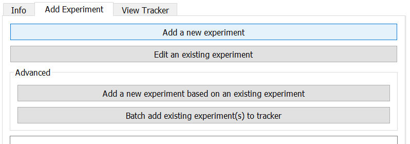
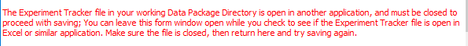
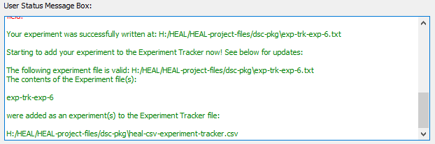

Your first step each time you open the tool should be to set your working data package directory.
If you have not yet set your working data package directory this session, do so before attempting to annotate.
If you have not set your working package directory before attempting to annotate an experiment, the tool cannot automatically generate your experiment-ID or connect your experiment to your data package folder. You will receive the error message below.
Navigate to the "Add Experiment" tab and select "Add a new experiment".

The tool will generate your experiment ID automatically and sequentially, based on what is already in your working data package directory.
Experiment name: This field can act as a more descriptive shorthand name for the experiment in addition to the experiment ID.
The experiment name should follow the format of default-experiment-name, with words separated by a "-".
Although not required, filling in the experiment name may help your internal team, as well as external investigators, to quickly understand the purpose and content of the experiment without having to read through the description, questions, and hypotheses.
If you do not follow the required format, you will receive an error:
Your experiment name must also be unique.
When you enter an experiment name, the tool will review your other annotated experiments to confirm that the experiment name you have assigned is unique.
If your experiment name is unique, the User Status Message Box will print a confirmation:
Experiment Question(s) and Experiment Hypothesis(es)
To add an experiment question/hypothesis, click on the paper icon.
You can add multiple experimental questions and hypotheses for the same experiment. To add another, click on the paper icon again.
When you have multiple questions/hypotheses entered, you can also change the order using the highlighted arrows. You can also use the 'X' to remove questions/hypotheses entered.
Once you have finished entering the experiment information, select "Save experiment."
Warning
Make sure that you do not have your Experiment Tracker open before trying to save.
If you attempt to save an experiment but have the Experiment Tracker open, the annotated experiment file will save to your dsc-pkg folder, but the tool will not be able to automatically save the information to the Experiment Tracker. You will receive this error:

If the experiment is saved successfully, the User Status Message Box will display this message to indicate your experiment saved successfully and that the experiment has been written to the Experiment Tracker file:

Although the tool will automatically add your experiment to the Experiment Tracker as part of the "save" process, your individual experiment annotation file will also be saved as a .txt file within the dsc-pkg folder.
Note
Once you have created them, you will not generally need to interact with the annotation files (.txt files) unless:
There is an error in automatically adding the experiment to the Experiment Tracker, which would necessitate manually batch adding experiments to the tracker
After you have added a new experiment, you can annotate a new experiment.
If you would like to annotate a new experiment, you can select "Clear form" at the top of the Annotate Experiment window. This will reset your form and generate the next sequential experiment ID, so you can start annotating.
The User Status Message Box will print a message confirming your form was successfully cleared and that the new sequential ID has been generated.